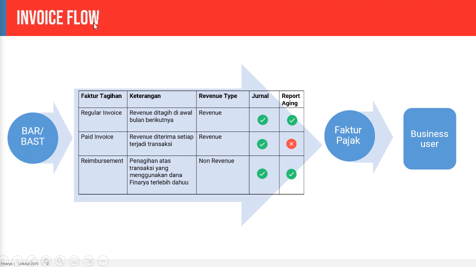
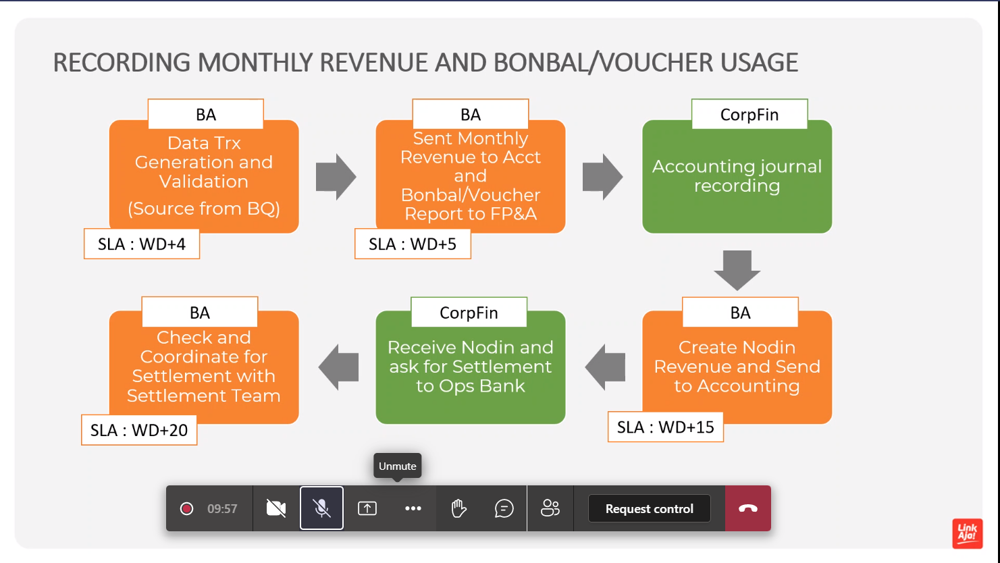
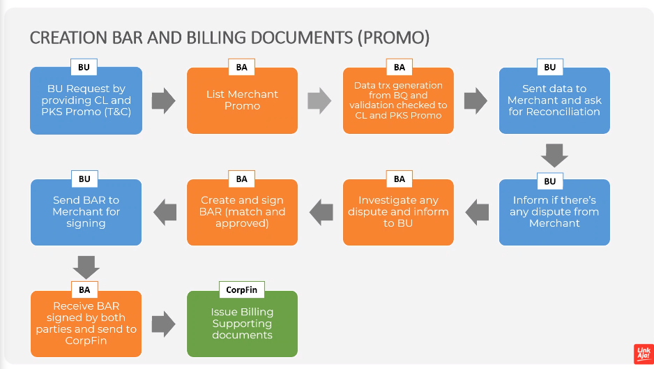
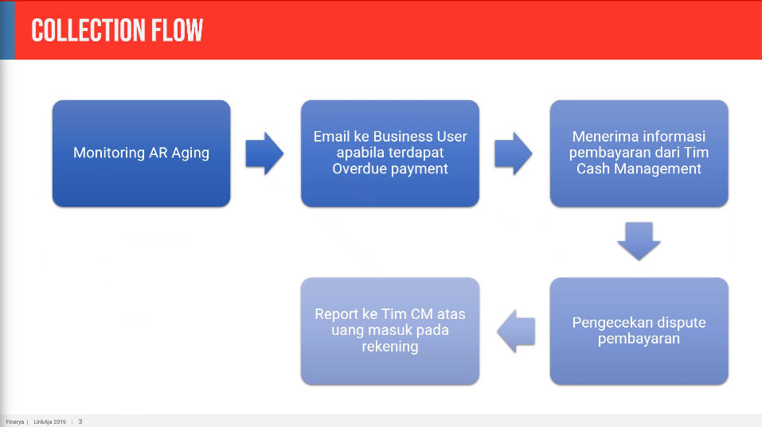

WT
Created Friday 10 September 2021
.home

,
nodin: nota dinas
digipos
mendapatkan revenue dari partner a, dan dibagi dengan partner b
revenuenya dibagi 2, revenue auto dan non auto
auto itu transaction fee tapi munculnya agregat
customer non syariah
pks monthly, tanggal 10
berita acara rekonsiliasi,
berita acara serah terima (ba ke ar, biasanya regular invoice karena tidak diterima di depan)
pencatatan di oracle, berdasar type (ssi, modern channel) lalu tipe konsumer syariah atau bukan
report aging
bonbal, list shortcut2 mana saja yang pemberian bonbal dan voucher
ini loh total bonbal dan voucher usage untuk user2 mana saja
pasal pph21 6%
daily basis dari BA
tarikin data terkait partner (tokopedia, dll)
big query atau gcp, berdasar shotcut?
nama settingan cps merchant onboarding, merchant ops bersama dengan bu
design by both parties
ketika disettle
nanti dicek ke pks, untuk mengecek kesamaan angka yang dipotong
ba ke bu, untuk crosscheck balance lagi, sebelum dikasih ke merchat
kalau ada dispute, terus ba rekonsiliasi
m
kalau udah nanti ke corfin, terus dikasih ke ar untuk invoicing dll
ada promo2 yang ditagihin creation bar and billing documents (promo)

